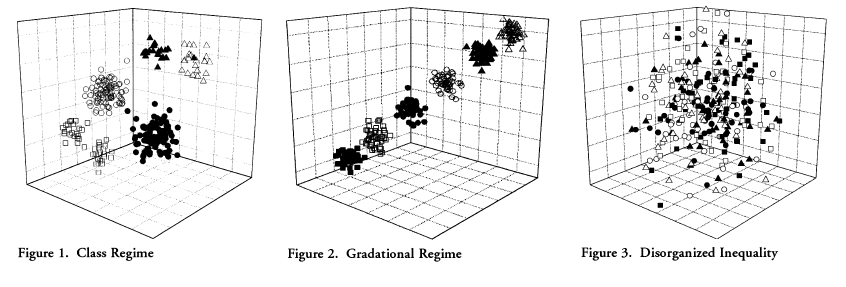

Para entender a qué nos referimos al conceptualizar a la clase social como variable independiente podemos pensar en el típico ejemplo de qué viene primero, si el huevo o la gallina. En este caso, la estructura de clases tiene potencial tanto de explicación como de fenómeno a ser explicado. En esta característica radican su versatilidad y complejidad. Lo cierto es que en esta sección, abordaremos de qué manera puede influir la clase en diversos aspectos de la desigualdad social, inherente a las sociedades actuales.
Dicho en otros términos, si tomamos un modelo simple, podemos representar a la variable independiente como X y a la variable dependiente como Y, veremos que:
X —> Y
Esta simplificación de la realidad nos brinda un modo sencillo de analizar la forma en que se relacionan las variables, dado que es la clase aquella que influye o afecta (pero nunca determina) a la desigualdad social. Asimismo, nuestra Y podría representar a múltiples factores o fenómenos que varían según el comportamiento de X. Esto es, por ejemplo, el modo en que la estructura de clases tiene efectos sobre la distribución de los ingresos de los individuos y de los hogares, o bien en el hábitat, los fenómenos demográficos, las condiciones laborales, el consumo, el capital cultural, los factores psico-sociales, entre otros. En la literatura, estos resultados ligados al posicionamiento de clase, fueron concebidos bajo diferentes ideas: “oportunidades de vida”, “condiciones de vida”, “nivel de vida”, “bienestar”, “riqueza”, “recursos”, “activos”, “capitales”, etc.
Con la finalidad de presentar estas numerosas relaciones que la variable clase posee en los fenómenos aquí presentados, tendremos en cuanta una a una las diferentes perspectivas que nos permiten comprender cada una de ellas.
La literatura destaca la relación existente entre las clases y las oportunidades de vida. Dicho de otro modo, existe una relación entre la estructura en la que se ubican los individuos y la posibilidad de lograr o alcanzar ciertas oportunidades de vida. Entonces, como señala Benza (2014), esto no significa que las clases determinen necesariamente, o generen directamente tales o cuáles “chances” de vida de las personas, sino más bien, contribuyen a la probabilidad de que se den. En pocas palabras, pertenecer a una clase hace que sea mayormente posible el hecho de lograr determinadas oportunidades de vida, que en el caso de pertenecer a otra posición de la estructura social serían diferentes.
Ya presentadas las diferencias que se ven afectadas por la pertenencia a una clase u otra, es decir, las diferencias entre clases, ahora nos centramos en ver qué sucede dentro de las clases, o sea, al interior de un grupo de la estructura social. Para ello, recordamos el argumento de Breen (2005, p. 3) acerca de la variabilidad en las oportunidades de vida que existen entre los miembros de una misma clase. Estas se deben a que las clases dependen de múltiples factores, lo que hace que cierta posición de clase no se corresponda totalmente —como condición sine qua non— con determinado conjunto de oportunidades de vida. La relación es más bien explicada como a consiguiente: las oportunidades de vida no se estructuran únicamente por la estructura de clases. También intervienen otros factores relevantes como la edad, el género, la etnia, el lugar de nacimiento y/o el nivel educativo.
¿Cómo funcionan, entonces, las oportunidades de vida? Estas se componen de una amplia paleta de aspectos tales como los ingresos, la capacidad de ahorro, la seguridad económica, la estabilidad económica, las expectativas económicas, la salud, entre otros (Chan & Goldthorpe, 2007; J. H. Goldthorpe & McKnight, 2006). De este modo, explorar la relación entre la estructura de clases y las oportunidades de vida, implica tomar como punto de partida a las clases para analizar cómo afectan a los fenómenos de tinte cuantitativo (por ejemplo: la distribución del ingreso), y aquellos de tipo cualitativo (por ejemplo: expectativas económicas). Siguiendo esta línea de acercamiento relacional, vemos que para Goldthorpe las clases sociales deben pensarse no en términos jerárquicos (respecto a los resultados y oportunidades a los cuales se asocian) sino en términos de posiciones más o menos ventajosas.
Hablar del estructural funcionalismo implica “movernos” en el nivel de abstracción del análisis. Si el enfoque weberiano nos permite ahondar en los aspectos macro estructurales, el funcionalismo hace foco en el nivel intermedio o meso de análisis sociológico. Desde esta perspectiva, partiendo de criterios evaluatorios, el sistema social jerarquiza a las posiciones en función del mérito y la especificidad de la ocupación detentada y también establece el “paquete de recompensas” (Cachón Rodríguez, 1989; Parsons, 1954). Esto es, la correspondencia ordenada e institucionalizada de la relación estratificación-recompensas.
Como consecuencia, lejos de referirse a la estratificación social como un factor estructurador de las desigualdades, las recompensas deben pesarse como una consecuencia del proceso de igualdad de oportunidades, es decir, una “desigualdad institucionalizada” de resultados existentes.
En un camino intermedio de estos dos enfoques se encuentra la propuesta de Grusky (2008). El autor plantea que existen tres componentes clave que definen a un sistema de estratificación: 1) los procesos institucionales que definen qué tipos de bienes deben ser valorados y deseables; 2) las reglas de asignación que distribuyen dichos bienes según ocupaciones en la división del trabajo y 3) los procesos de movilidad que ligan a los individuos con las ocupaciones y brindan un control desigual sobre los recursos valorados (Grusky, 2008, p. 5), ilustrado en la 6.1.
Dentro de los activos que se encuentran desigualmente distribuidos en la sociedad, podemos nombrar a los: económicos, de poder, culturales, religiosos, sociales, honoríficos, civiles, humanos y físicos.
Activos | Ejemplos | ||
Tipo de activos | Ejemplos | Aventajados | Desaventajados |
Económico | Riqueza | Billonarios | Trabajador quebrado |
Ingresos | Profesionales | Obrero | |
Propiedad | Capitalistas | Empleado | |
Poder | Poder político | Primer ministro | Persona sin derechos |
Autoridad en el trabajo | Manager | Trabajador subordinado | |
Autoridad en el hogar | Jefe/a de hogar | Niño | |
Cultural | Conocimiento | Intelectuales | Persona sin educación |
Cultura digital | Residentes de Sillicon Valley | Residente de otros lugares | |
Buenas maneras | Aristocracia | Plebeyos | |
Social | Club sociales | Miembro de un club de campo | No miembro |
Asociaciones profesionales | Miembro de sindicato | No miembro | |
Redes informales | Washington A-List | Desconocido | |
Honorífico | Ocupacional | Juez | Recolector de residuos |
Religioso | Santo | Excomulgado | |
Basado en el mérito | Premio Nobel | No ganador | |
Civil | Derecho al trabajo | Ciudadano | Migrante ilegal |
Debido proceso | Ciudadano | Supuesto terrorista | |
Voto | Ciudadano | Delincuente | |
Humano | Formación laboral | Trabajador expermientado | Trabajador inexperto |
Formación escolar | Graduado | Desertor escolar | |
Formación vocacional | Graduado | Trabajador no calificado | |
Físico | Mortalidad | Persona con larga vida | Muerto prematuro |
Enfermedad física | Persona saludable | Persona con SIDA, asma | |
Salud mental | Persona saludable | Deprimido, alienado | |
Fuente: Grusky (2008) | |||
Existe otra alternativa para aproximarnos a la relación entre clases y distintos fenómenos sociales. Esta perspectiva focaliza en el riesgo como característica central, el cual se distribuye de manera desigual según la clase social (Esping-Andersen, 2000). Dicho de modo simple, el factor clave para esta tesis es el riesgo social, que cambia de un nivel individual al social una vez que a) hay consecuencias colectivas sobre el destino de los individuos; b) la sociedad lo reconoce como necesidades de consideración pública y c) la sociedad se complejiza. El punto es que el riesgo social no está dispuesto de la misma manera en toda la sociedad, sino como señalamos anteriormente: de forma desigual entre las clases (en la estructura social) y los cursos de vida (de los individuos).
Entonces, ¿cómo logra lidiar la sociedad con el riesgo? Según este autor existen tres fuentes:
- La familia: es la solución tradicional
- El mercado: es la solución liberal
- El Estado de Bienestar: es la solución divergente, que puede identificarse con la democracia social.
A diferencia de las miradas liberales, este enfoque entiende a las carencias y los riesgos, no como atributos de las personas, sino como probabilidades de grupos sociales: como aspectos colectivos. Este enfoque agrega un adicional a la propuesta weberiana, que radica en el papel del Estado a la hora de gestionar dichos riesgos. El concepto “desmercantilización” es clave para entender la cuestión, ya que el concepto aspira a captar el grado en el que el Estado puede garantizar determinados bienes y servicios debilitando su nexo monetario, es decir, independizando su obtención de acuerdo al lugar ocupado en el mercado. En función de la intensidad con la cual los riesgos de clase fueron atendidos, según Esping-Andersen, tres tipos ideales de Estado tuvieron lugar en las sociedades occidentales: un formato liberal, uno corporativista y uno universalista.
La solución del autor, en breve, apunta a otorgar un mayor peso de responsabilidad en el estado para las soluciones públicas de los problemas colectivos, en detrimento del papel que el mercado o la familia, en tanto instituciones, puedan tener.
Finalmente, existen una serie de enfoques y teorías que señalan el debilitamiento y la descomposición del concepto de clase social como elemento central para comprender el sistema de desigualdades (Dubet, 2015). Según estos enfoques, las transformaciones en el capitalismo hacia finales de siglo XX, que algunos autores han englobado bajo la idea de “capitalismo de acumulación flexible”, “capitalismo tardío” o “post-industrialismo”, entre otras etiquetas, encontraron cierta compatibilidad con un proceso de cambio en el régimen de significación cultural que se daba a la par: el pasaje del modernismo al posmodernismo (Lash, 2007). El paradigma productivista que había marcado a fuego las relaciones sociales, las instituciones y los modos de acción social y política, sobre todo en los treinta gloriosos años del Estado de Bienestar, dejaría lugar a un nuevo régimen en el cual el consumo y la consecuente estilización de la vida cobran una mayor preeminencia, erigiéndose como nuevos cimientos del lazo social, las interacciones y la acción comunitaria.
Es partir de este desfasaje entre las mutaciones que atraviesa la sociedad en su conjunto y las categorías empleadas para analizarlas, que algunos autores plantearon la pérdida de la potencialidad explicativa del concepto de clase social y sus derivados. En una posición casi límite, Touraine (2005) indicaba que categorías tales como clase social y riqueza o estratificación y movilidad social, perdieron su poder explicativo debido a un cambio de paradigma en la interpretación de la vida personal y colectiva que ya no remite a una explicación en términos sociales. En esta línea, Beck (1998) planteaba que la modernidad había producido una fractura en la cual la clásica sociedad industrial se disuelve transformando a las desigualdades sociales en desigualdades personales. De este modo, las categorías centrales del análisis de clase, herederas de la tradición marxista y weberiana, que funcionaban como “diques de contención” de los agrupamientos sociales, se vuelven estériles para comprender los procesos de individuación y diversificación en los estilos de vida que caracterizan a la nueva dinámica social.
A grandes rasgos, los distintos enfoques que hemos reseñado en esta sección pueden ilustrarse en las siguientes gráficas:
Gráfico 6.1: Tipos de representación de la estructura social (Grusky, 2008): 1) Régimen de clase, 2) Régimen gradacional, 3) Desigualdad desorganizada
Mientras que el primero de los gráficos hace referencia a los enfoque clásicos relacionales de clase, en donde las distintas posiciones no pueden representarse en términos de “más altas” o “más bajas”, sino de acuerdo a las múltiples relaciones que se dan entre los grupos, el segundo gráfico hace referencia al enfoque estructura funcionalista, en el que las posiciones son pensadas en términos gradacionales y la distribución respecto a las oportunidades de vida se da en forma ordenada. Finalmente, en el tercer gráfico, se muestra la representación del enfoque que señala el debilitamiento de la clase como factor explicativo de las desigualdades, ante la aparición de múltiples aspectos y factores de mayor relevancia. En este sentido, la desigualdad se torna, en parte, irrepresentable y desorganizada a partir de características de raigambre más individual.